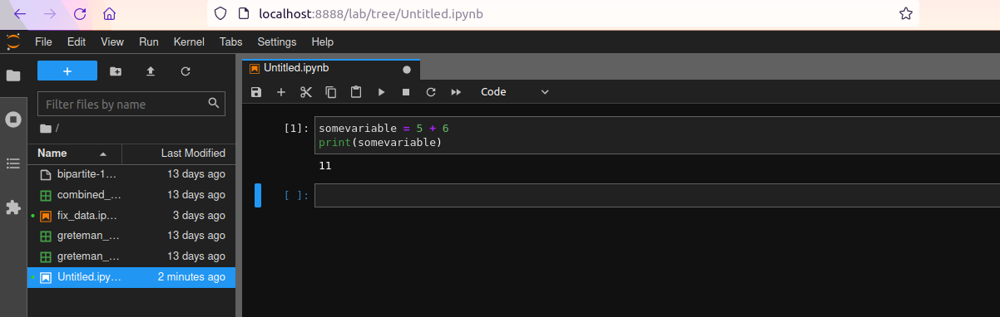

CIS 241, Dr. Ladd
It’s the code you write.
somevariable = 5 + 6
You can write Python in different places, but in this class we will write and run Python inside Jupyter Lab.

Files are organized in a hierarchy of directories.
Create a variable called “newVar” that is equal to the value of five plus seven. Then display your variable to see what its value is.
i_use_snake_case
otherPeopleUseCamelCase
some.people.use.periods
And_aFew.People_RENOUNCEconventionComments in Python begin with a # symbol.
You should also use comments for citations!
"five")5)5.0)These are “.ipynb” files, and you can create them by clicking the
+ icon at the top left of the Jupyter Lab window and
selecting a Python 3 notebook.
Always comment your code so you can remember things when you come back later!
Python has many built-in functions.
# Some functions give a number result
sum([5,6,7])
mylist = [5,6,7]
sum(mylist)
len(mylist)
# But functions can do anything!
type(mydictionary)Functions can do just about anything: calculate values, create graphs, transform data, etc.
def myfunction(arg1, arg2, ... ):
statements
return objectA real example:
for operator to iterate through a
list.if and else to set
conditions.Import the pandas package and abbreviate it
pd. If it works, there will be no output!